Tono
Tono · Iwate
Tono
Highlighted on the Iwate map.
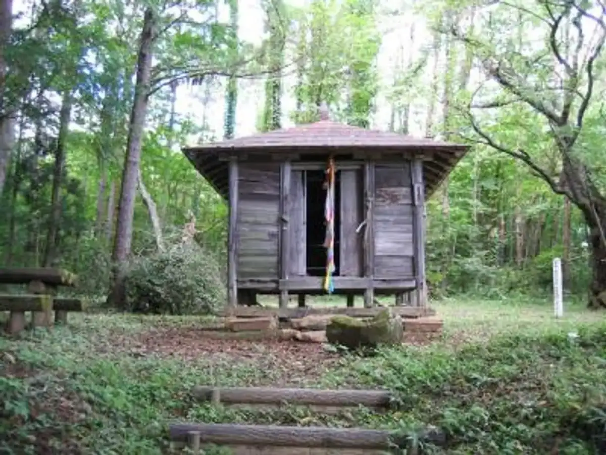
Stay
ホテル きくゆう
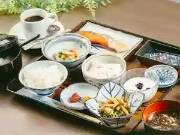
Hoteru Kikuyuu
Hotel in Tono, Iwate.
コテージランド かしわぎ
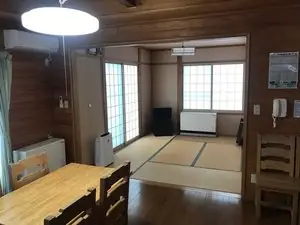
Koteejirando Kashiwagi
Cottage in Tono, Iwate.
Dining
おのひづめ
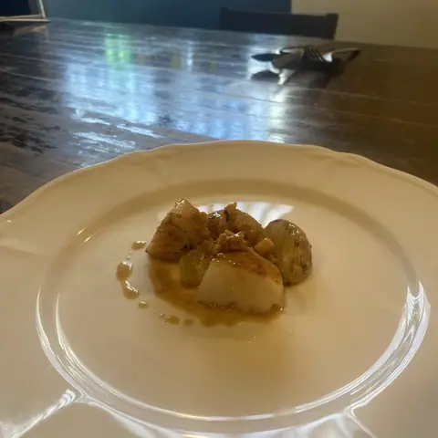
Onohizume
Italian restaurant in Tono, Iwate.
じんぎすかん あんべ
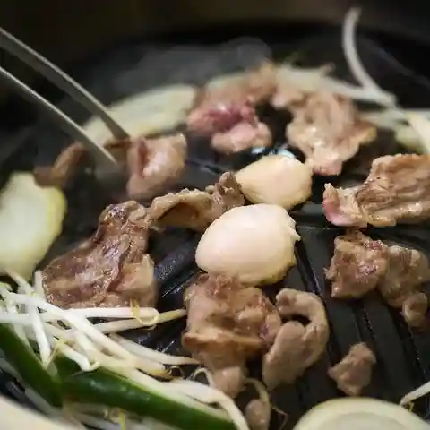
Jingisukan Anbe
Jingisukan (lamb BBQ) restaurant in Tono, Iwate.
日本料理 旬菜和田
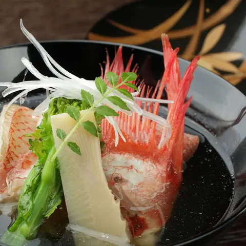
Nihonryouri Jun Na Wada
Japanese restaurant in Tono, Iwate.
遠野食肉センター 遠野本店
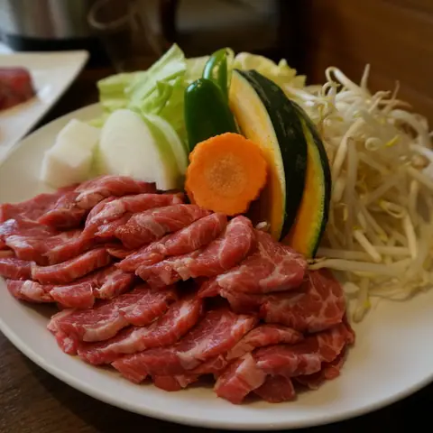
Toono Shokuniku Sentaa Toono Honten
Jingisukan (lamb BBQ) restaurant in Tono, Iwate.
遠野ジンギスカン羊丸・道
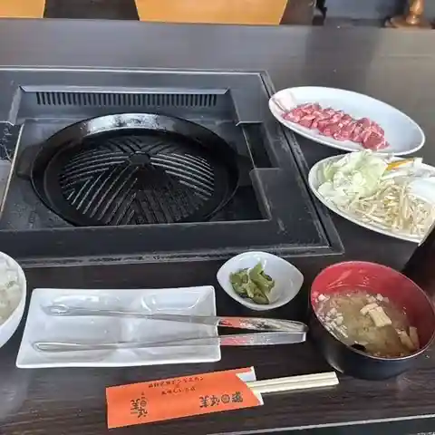
Toono Jingisukan Hitsuji Maru Michi
Jingisukan (lamb BBQ) restaurant in Tono, Iwate.
多田自然農場
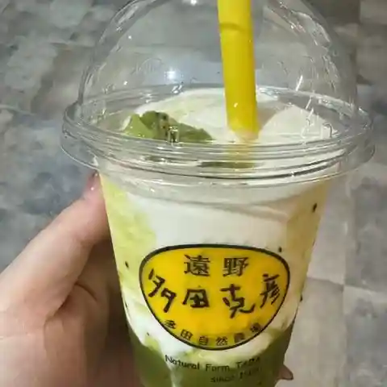
Tada Shizen Noujou
Gelato and ice-cream shop in Tono, Iwate.
中華そば 朔望
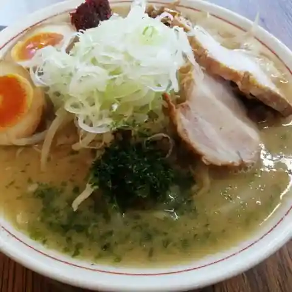
Chuuka Soba Sakubou
Ramen shop in Tono, Iwate.
とおのごはん
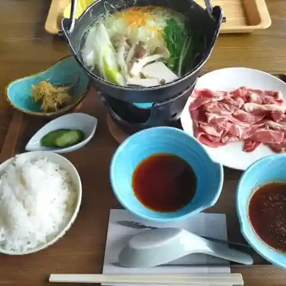
Toonogohan
Shokudo diner in Tono, Iwate.
伝承園
Denshou Sono
Local-cuisine restaurant in Tono, Iwate.
道の駅 遠野 風の丘
Michi No Eki Toono Kaze No Oka
Roadside-station eatery in Tono, Iwate.
ばんがり
Bangari
Ramen shop in Tono, Iwate.
まつだ松林堂
Matsuda Matsubayashi Dou
Japanese sweets shop in Tono, Iwate.
遠野そば まんてん
Toono Soba Manten
Soba restaurant in Tono, Iwate.
伊藤家
Itou Ie
Soba restaurant in Tono, Iwate.
漁師の魚屋
Ryoushi No Sakanaya
Seafood restaurant in Tono, Iwate.
まるまん じんぎす館
Maruman Jingisu Kan
Jingisukan (lamb BBQ) restaurant in Tono, Iwate.
レストラン 銀河亭 道の駅 みやもり店
Resutoran Ginga Tei Michi No Eki Miyamori Mise
Ramen shop in Tono, Iwate.
まきばのおもてなし
Makibanoomotenashi
Gelato and ice-cream shop in Tono, Iwate.
ごはん屋 花りん
Gohan Ya Hana Rin
Shokudo diner in Tono, Iwate.
語りべ
Katari Be
Seafood restaurant in Tono, Iwate.
あえりあ遠野
Aeria Toono
Ryokan restaurant in Tono, Iwate.
かっぱの茶屋
Kappano Chaya
Soft-serve stand in Tono, Iwate.
くいしんぼちから
Kuishinbochikara
Sake bar in Tono, Iwate.
Sights
Akabane Ski Resort
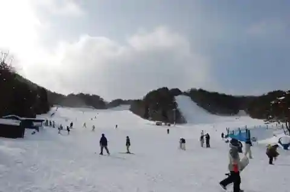
In addition to three courses ranging from beginner to advanced, there is also a children's playground where families can enjoy playing in the snow.
Yume Sanchoku Kamigo
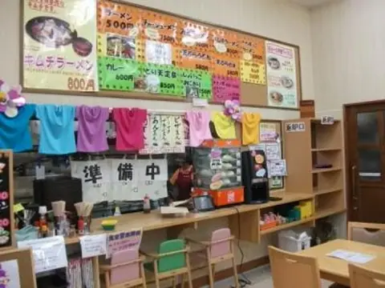
Tono City's new direct sales facility for agricultural products, "Yumesan Direct Kamigo." It opened in 2012 along National Route 283 in Kamigo-cho, Tono City.
Yumesaki Chaya (Roadside Station Tono Kaze no Okauchi)
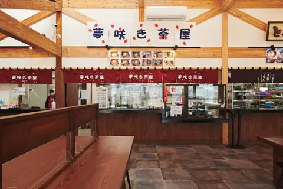
Yumesaki Chaya (Roadside Station Tono Kaze no Okauchi)
Tono meat center main store
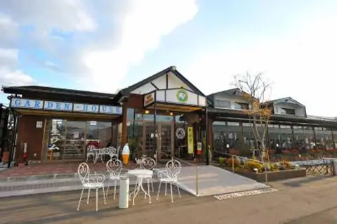
A store specializing in Tono's famous Genghis Khan. This is the birthplace of raw lamb Genghis Khan.
Genghis Khan Anbe
A long-established Genghis Khan specialty store in Tono City.
Yumesaki Chaya
This is a farm-style restaurant located inside the roadside station Tono Kaze no Oka Food Hall.
Tono Genghis Khan Hitsujimaru Michi
Tono Genghis Khan Hitsujimaru Michi (formerly Maruman Jingisan Hitsujimaru)
Tono Wasabi
The Miyamori district of Tono City is known as the "wasabi village." The wasabi grown using the clear spring water of the Tatsusobe River has an exquisite balance of color, aroma, and spiciness.
Kamihei Sake Brewery
Kunika-no-Kaoru" is sake made by the traditional skills of the Nanbu Touji, in the harsh but beautiful natural environment of Tono, with clean water flowing from the foot of Rokkaku-gyu Mountain and clean air.
Tsukimoushi Dolls
Traditional craft dolls that were actively made in the Tsukumaushi area during the Edo period.
Akegarasu Honpo Matsuda Shorindo
The original Akigarasu Honpo Matsuda Shorindo
Roadside Station Miyamori Meganebashi Direct Sales Office
Roadside Station Miyamori Meganebashi Direct Sales Office
Kuratsubo soba
This soba is made with "Kuretsubo Kabu," which was praised as a condiment for soba, sashimi, and yakiniku in the gourmet manga "Oishinbo Volume 32."
Kuratsubo turnip
Locals have long eaten it as a pickle, and in recent years it has been used as a condiment for soba noodles, sashimi, grilled meat, and other dishes.
Amagamori Glass Painting Museum
Opened in April 2015 on a small hill on the north side of Amagamori.
Tomo-chan Farm-Direct Market
An agricultural products direct sales processing facility located along Route 107 in the town of Kotomo-cho, Tono City.
Tabi no Kura Tono (Tono Tourism Exchange Center)
Traveling to Tono (Tono City Tourism Exchange Center)
Kojin Shrine
This is one of the places where the original landscape typical of Tono remains.
Chotan Gorge
This valley is located in the upper reaches of the Sarugaishi River.
Asonuma Lords’ Monument
When Minamoto no Yoritomo destroyed the Oshu Fujiwara clan, Asonuma Shiro Hiroami received the Twelve Villages of Tono for his military exploits.
Murahei Inari Shrine
It is said that the secret Buddhist statues were made in Kyoto by the Murakami and Murai families, who were merchants of the Tono Nanbu family, when they were prospering, and were made by a famous Buddhist sculptor.
Monument to Lady Seishinni
The grave site of Seishinni, the 21st head of the Tono Nanbu family.
Roadside station “Miyamori”
It is located in the center of Miyamori Town, halfway along National Route 283, which connects the inland and coastal areas of Iwate Prefecture.